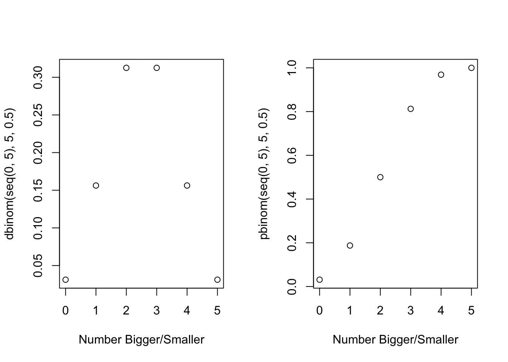
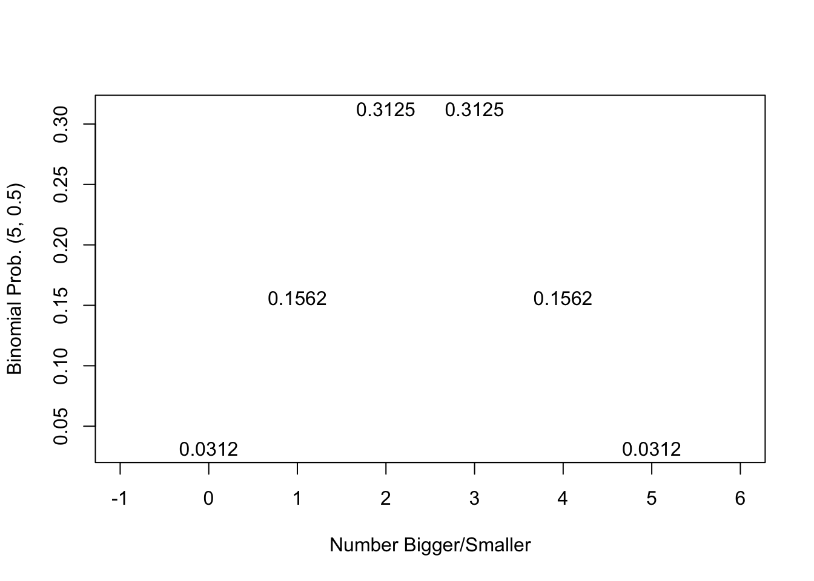

par(mfrow=c(1,2))
plot(x=seq(0,5), y=dbinom(seq(0,5), 5, 0.5), xlab="Number Bigger/Smaller")
plot(x=seq(0,5), y=pbinom(seq(0,5), 5, 0.5), xlab="Number Bigger/Smaller")
Robert W. Walker
February 5, 2023
The Rule of Five states that the median of any population should be between the lowest and highest collected values in a sample of five with almost 94 percent probability. Why?
par(mfrow=c(1,1))
plot(x=seq(0,5), y=dbinom(seq(0,5), 5, 0.5), xlab="Number Bigger/Smaller", pch="", ylab="Binomial Prob. (5, 0.5)", xlim=c(-1,6))
text(x=seq(0,5), y=dbinom(seq(0,5), 5, 0.5), labels=round(dbinom(seq(0,5), 5, 0.5), digits=4))
The probability that all five observations are above [0.03125] or below [0.03125] totals to 0.0625; there is a 93.75% chance it is interior to the five random observations.